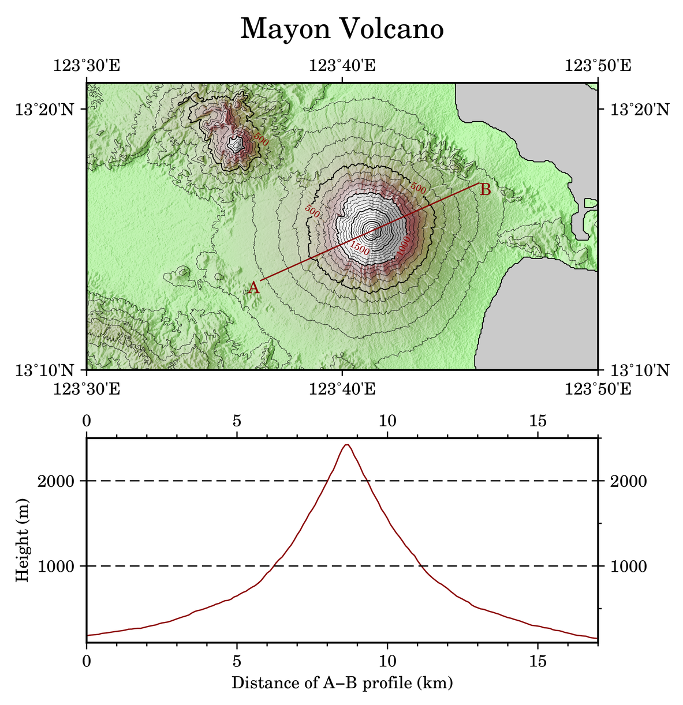
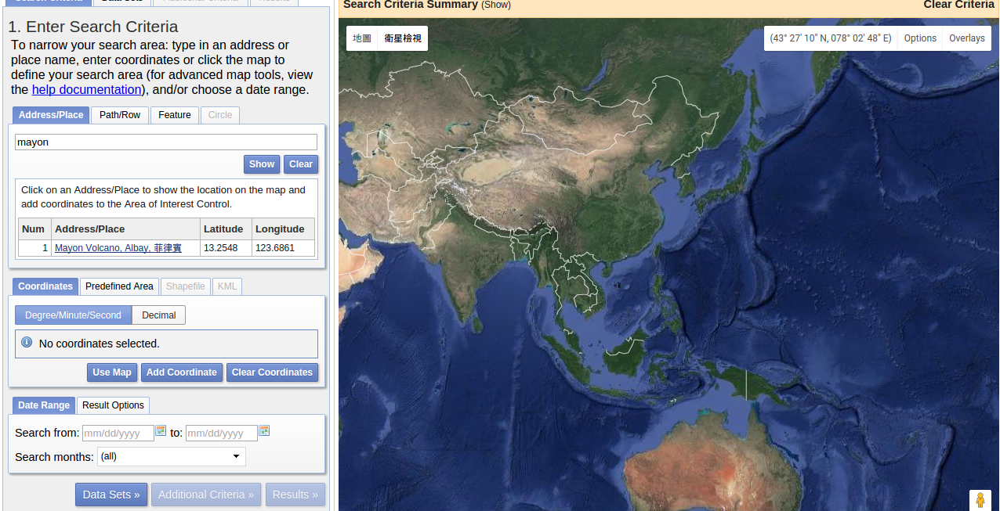
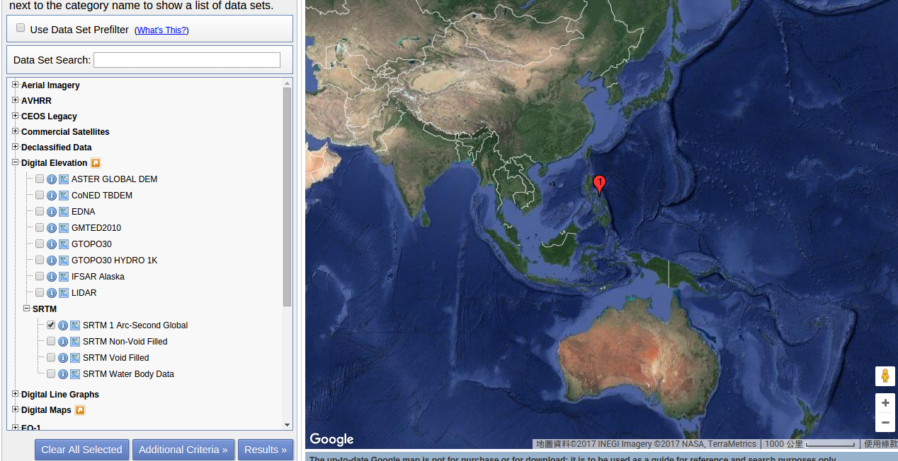
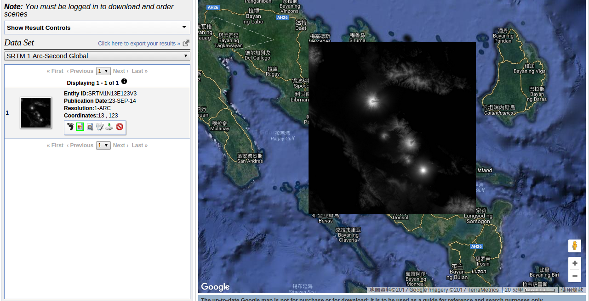
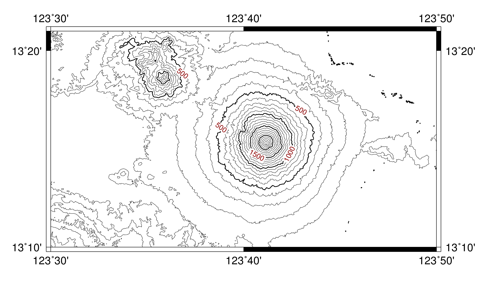

等高線地圖及地形剖面
Contents
12. 等高線地圖及地形剖面#
在本章中，我們要使用 GMT 繪製等高線圖與地形剖面圖，這兩種地圖非常適合用來表示地形的升降起伏，以及不同地點的陡峭程度。如果你是個登山客，想必它們會是你最愛用的地圖類型。
12.1. 目標#
使用 SRTM (Shuttle Radar Topography Mission，太空梭雷達地形任務) 提供的地形資料，繪製馬榮火山 (Mayon Volcano) 的地形等高線圖，以及一條穿過火山頂部的剖面高度圖。馬榮火山是一座位於菲律賓的火山，以近乎完美的錐體外型聞名。在以下的等高線圖和 A-B 點之間的剖面圖中，可以大致計算出火山高度是 2400 公尺，錐體半徑則大概是 9 公里左右 (注意剖面並沒有完整的切穿整個錐體，尤其是在 A 點附近)。研究指出此火山的外型主要受到岩漿成份控制，上半段近似於拋物線，而下半段則與對數曲線非常接近1。這意味著越接近山頂，地表越陡，如果你想去登頂的話，要先做好心理準備！
馬榮火山也是一座非常活躍的火山，上次噴發是在 2009 年底，其餘因岩漿活動導致的噴氣、地表變形等等的現象也非常頻繁。在過去，火山噴發時常帶給周圍村莊毀滅性的災難，但拜科學研究發展所賜，近年來已經很少造成人員傷亡。
{kind=link}
直接觀看指令稿
圖 12.1 從鄰近區域觀看的馬榮火山，完美的外型令人震懾。Tomas Tam 的攝影作品。#
12.2. 使用的指令與概念#
grdgradient- 計算網格檔的梯度與照明值grd2cpt- 使用網格檔的資訊建立色階檔gmtset- 更改 GMT 的預設作圖參數psxy- 輸出檔頭與檔尾、繪製折線grdimage- 繪製暈渲圖pscoast- 繪製海岸線與海域填色grdcontour- 繪製等高線與其數值標籤project- 產生以公里為單位的路徑座標grdtrack- 給定座標，對網格檔取樣pstext- 在地圖上加入文字psbasemap- 設定繪圖區、座標軸與邊框gmtinfo- 由數值資料的純文字檔建立-R設定外部指令
rm- 刪除檔案 (Windows 為del)外部指令
cut- 擷取文字檔中的特定幾個欄位 (非必要)GDAL 指令
gdal_translate- 把 Geotiff 轉成 NetCDF 格式 (非必要)GMT 共用選項：
-i在
-R參數中使用度分秒格式座標設定座標軸標籤與刻度的一些技巧
12.3. 前置作業#
首先我們要取得 SRTM 的地形資料。這些資料目前可以經由美國地質調查局 (USGS) 管理的網站 EarthExplorer 取得。前往 EarthExplorer，然後在「Address/Place」搜尋的地方輸入 Mayon，然後按下 show，選擇下方出現的 Mayon Volcano 一欄。接著，按下下方的 Data Sets >>。
你可以使用搜尋框或下方的分類目錄，找到並勾選 SRTM 1 Arc-Second Global 的資料集，然後按下 Results >>。
接下來，應該會有一筆資料呈現在左側搜尋結果欄中。你可以按下圖示預覽此資料，如下圖所示。如要下載，請按下「下載」的圖示。本資料需要登入才能下載，如果你尚未有 USGS 帳號，可以花幾分鐘註冊，只需要一組電子信箱即可。登入之後，選擇 GeoTIFF 1 Arc-second (24.8 MB) 的資料格式。
備註
1 弧秒 (arc second) 的角度在地球表面大概是 30 公尺的距離，這意味著我們下載的 SRTM 資料中的每個像素代表地球上的 30 x 30 平方公尺大小的區域。
GeoTIFF 也是一種網格地理資料儲存的格式，與 GMT 支援的
NetCDF 格式類似。不同的是，GeoTIFF 使用 .tif 作為標誌的副檔名，而且自身帶有網格的投影法與座標系統等資料。
下載的檔案預設的命名是 n13_e123_1arc_v3.tif。使用 GDAL
函式庫中的 gdal_translate 指令，可以把檔案的格式轉成 GMT 支援的 NetCDF 檔案。語法如下：
$ gdal_translate 輸入檔.tif -of NetCDF 輸出檔.grd
如果你的電腦沒有安裝 GDAL 或純粹為了方便起見，你也可以直接從以下連結取得本章節會使用的 SRTM .grd 檔案：
小訣竅
如果你的電腦是先裝了 GDAL 然後再裝 GMT，那麼 GMT 就能使用 GDAL 直接處理 GeoTIFF 格式檔案。你可以使用以下語法進行測試：
$ grdinfo n13_e123_1arc_v3.tif
如果正確的資訊可以顯示出來，就表示你的 GMT 可以透過 GDAL 支援 GeoTIFF 檔案。因此，你也可以試著不轉檔，直接使用 .tif 的檔案進行底下的操作流程。有關如何設定 GDAL 與 GMT 的相互支援，以及其他的細節說明，請參閱之後的章節。
{kind=link}
12.4. 操作流程#
首先我們來試著繪製等高線圖。grdcontour 指令是這章地圖的主角，它可以讀取一個網格檔，然後在地圖上繪製等高線的線條與數值。基本語法為：
$ grdcontour 輸入grd檔名 -C等高線參數 -A標注數值的等高線參數 [-W畫筆]
-C 有幾種參數指定方式：
-C數值指定等高線間距。-C+數值繪製特定高度的等高線。-C色階檔繪製色階檔中顏色邊界數值的等高線。-C非色階檔使用檔案的第一欄當作要繪製等高線的高度，而由第二欄決定是一般等高線 (c) 或是標注數值的等高線 (a)
-A 指定的是「標注數值的等高線」，你也可以把它想像成「主等高線」。使用 -A 的結果跟 -C 很像，差別只是在於用 -A 畫出的等高線會比較粗，而且會加上數值。它也有幾種參數指定方式：
-A數值指定標注數值的等高線間距。-A+數值在特定高度繪製標注數值的等高線。-A[數值資訊][標籤資訊]設定數值標籤的字型、外框、角度等等參數 。
-W 指定等高線的畫筆屬性。如果地圖上同時有兩種等高線的話，可使用 -Wc畫筆 設定一般等高線，-Wa畫筆
設定標注數值的等高線。
現在讓我們來試試看以下指令：
$ grdcontour n13_e123_1arc_v3.grd -C100 -A500+f8p,,darkred \
-R123:30E/123:50E/13:10N/13:21N -JM15c -Ba10m -P > mayon_contour.ps
# 等高線每 100 單位 (公尺) 畫一個，每 500 單位則是標注數值的等高線
# -A+f 指定字型樣式
# -R 格式使用「度:分 + 方位」
# -Ba 格式使用 10m 表示每 10 弧分做一標注
出圖會如下所示：
備註
上圖使用 GMT 的預設版面設定，因此與最終的剖面圖外觀有些不同。本章中將不會說明如何調整字型、線條粗細或顏色等的細節，請自行參考指令稿 中的變數與 gmtset 的設定調整。有關 gmtset 詳細的說明，請參閱版面設計與地圖的幾何布局。
看起來效果相當不錯！值得注意的是，地圖上有些非常小的斑點，這些斑點在小比例尺的地圖上反而會減少地圖的辨識度。因此，我們可以使用 -Q 選項，使 grdcontour 略過非常小的等高線環。以下的範例會使用 -Q100，但你也可以自行增減數值，數值越大，表示被略過的等高線長度就越大，反之亦然。
備註
SRTM 的海拔資料是使用雷達波 (也就是特定頻率的微波) 測量出來的，而雷達波和可見光一樣，都無法有效穿越水體。因此，SRTM 的海拔並不包含水底高度，在海面上的高度不是 0 m 就是無資料。因此，在上圖中基本上是無法看到 0 m
等高線的，就算有也是可以忽略的小環。這也就是為什麼我們在最終出圖中要使用 pscoast 把海面全塗上藍色的原因。
完成了本章的第一個重點後，接下來的問題是要怎麼製造出剖面線段、取得剖面的高度，最後把剖面的位置和剖面圖都加到地圖上。如果我們要預計要畫火山的剖面，最簡單的方式就是設定一條直線切穿山腳與山頂。如此一來，我們得先決定直線的起點與終點。以下是在本例中要採用的座標，但你也可以隨自己喜歡變更起點與終點的位置，製造出不同的地形剖面。
起點：
123.613/13.2236終點：
123.756/13.2862
接下來，我們要使用 project 這個指令來產生從起點到終點的路徑座標。在「版面設計與地圖的幾何布局」中，我們初次介紹了 project 的用法，不過那是平面直角座標的狀況。在本例中為求精確，我們要沿著大圓路徑規劃剖面。由於剖面上的每個點，就是等一下我們要計算高度的位置，因此密度也得足夠高才行。試試看在終端機中輸入以下指令，會看到隨後的輸出：
$ project -C123.613/13.2236 -E123.756/13.2862 -G0.1 -Q
123.613 13.2236 0
123.613842421 13.2239691076 0.1
123.614684845 13.2243382124 0.2
123.615527271 13.2247073145 0.3
123.6163697 13.2250764138 0.4
123.617212132 13.2254455104 0.5
.... # (以下略)
# -Q: 設定 -G 的間隔單位為公里 (地理座標專用，如果不設的話，-G 的單位會與起終點座標相同，也就是角度)
# -G: 間隔 0.1 單位取樣
# project 預設就是沿著大圓路徑取樣，不需要額外的參數。
輸出第一欄與第二欄是經緯度，第三欄是與起點的距離 (以公里為單位)。接下來，我們要介紹一個新的指令 grdtrack，這個指令會接受一連串的「取樣點」，然後對目標的網格檔取樣。因此，把 project 的輸出座標丟給這個指令後，它就會幫我們找出網格檔在這些地方的數值 (在本例中也就是高度)。grdtrack 的語法如下所示
$ grdtrack [至少二欄的檔案或是標準輸入(stdin)] -G輸入網格檔
grdtrack 預設會讀取輸入資料的前兩欄作為座標。利用管線指令，可以直接把 project 的輸出傳遞給 grdtrack：
$ project -C123.613/13.2236 -E123.756/13.2862 -G0.1 -Q | grdtrack -Gn13_e123_1arc_v3.grd
123.613 13.2236 0 181.307738624
123.613842421 13.2239691076 0.1 188.260577788
123.614684845 13.2243382124 0.2 191.580201564
123.615527271 13.2247073145 0.3 195.183921513
123.6163697 13.2250764138 0.4 197.771070118
123.617212132 13.2254455104 0.5 208.638871238
.... # (以下略)
輸出中新增的第四欄，就是網格檔在給定的座標點上之數值。我們只要把標準輸出利用 > 轉存到檔案中，就能使用其他的指令 (如 psxy) 繪製這些數值。我們現在就來在等高線圖上面畫上剖面：
out_ps="mayon.ps"
in_grd="n13_e123_1arc_v3.grd" # 地形資料輸入檔，NetCDF 格式 (轉檔後)
in_track="mayon_track.xy" # 剖面座標的輸入檔
# ==== 等高線圖 ====
psxy -R0/1/0/1 -JX1c -T -K -P > $out_ps # 純寫入 PS 檔頭
# 繪製海岸線，然後把海面著色
pscoast -R123:30E/123:50E/13:10N/13:21N -JM15c -O -K -Df -Sgray -Wthin >> $out_ps
# 主要等高線是 500 單位間隔，並加上數值標籤 (-A)；次要等高線則是 100 單位間隔 (-C)
# -A+o 數值標籤周圍留白的部份是圓角長方形 (不加 +o 的話是尖角長方形)
grdcontour $in_grd -R -J -O -K -C100 -Q100 -A500+f8p,25,darkred+o >> $out_ps
# ==== 製作剖面然後繪製在等高線圖上 ====
# 給定起終點的經緯度，以每 0.1 公里為距離，對輸入的網格取樣
project -C123.613/13.2236 -E123.756/13.2862 -G0.1 -Q |\
grdtrack -G$in_grd > $in_track
# 輸出的檔是四欄：經度、緯度、距離、輸入網格的 z 值
# psxy 預設使用前兩欄繪圖，所以儘管檔案有四欄資料，我們仍然不用加上任何指定欄位的參數
psxy $in_track -R -J -O -K -Wthick,darkred >> $out_ps
# 擺上剖面兩端的編號文字，使用不同對齊方式
# RT：右側靠頂
# LT：左側靠頂
pstext -R -J -O -K -F+j+f14p,25,darkred >> $out_ps << TEXTEND
123.613 13.2236 RT A
123.756 13.2862 LT B
TEXTEND
# 加上外框與座標軸標籤
psbasemap -R -J -O -K -Ba10m >> $out_ps
psxy -R -J -O -T >> $out_ps # 純寫入 PS 檔尾
等高線圖就完成了！
下一步是使用剛才 grdtrack 取樣的資料，繪製沿著 AB 線的剖面圖。這個相對簡單，只要使用
psxy，指定直角座標 -Jx 或 -JX 即可。但我們可能會遇到 2 個問題需要克服：
如何指定
psxy的-R？要手動輸入資料的最大最小值嗎？我們要使用剛剛儲存的資料的第 3 與第 4 欄，但這不是
psxy預設讀取的資料欄位。
要解決第一個問題，需要用到一個好用的新指令 gmtinfo。它的功用很類似 grdinfo，只不過
grdinfo 用來查看網格檔的資訊，而 gmtinfo 則用來查看文字檔的資訊。如果你已經把 grdtrack
的輸出資訊存到了 mayon_track.xy，那麼請輸入以下指令
$ gmtinfo mayon_track.xy
mayon_track.xy: N = 171 <123.613/123.756> <13.2236/13.2862>
<0/16.9705410195> <150.632902656/2422.78332276>
它的預設輸出是「行數 (N)」以及各欄的最大與最小值。這裡我們需要的是第 3 與第 4 欄的最大最小值，你可以手動輸入到 psxy 的 -R 選項，或是使用下列指令取得：
$ gmtinfo mayon_track.xy -i2,3 -I1/100
-R0/17/100/2500
# -i: 選擇欄 2 與欄 3 (因為它從 0 開始編號，所以這也就是第 3 與第 4 欄)
# -I: 傳回與給定的級距最接近的數值。因此，欄 2 的回傳數值會被四捨五入至整數，
# 欄 3 的回傳數值則會是 100 的倍數。
注意當選項 -I 設定後，輸出值整個大改變了，符合 -R 的格式，方便之後的運用。因此，我們可以這樣寫腳本：
R=$(gmtinfo $in_track -i2,3 -I1/100)
psxy $R -J -O -K 其他設定...
這樣一來就不用煩惱手動找尋 -R 選項的問題。
注意
在舊的 GMT 腳本中，這個功能是由 minmax 指令負責執行，但在 GMT 5 中，minmax 預計會被 gmtinfo
逐步取代。因此，如果你使用以下指令取得 -R 資訊，會出現警告訊息，提醒你要把 minmax 換成 gmtinfo。
minmax mayon_track.xy -i2,3 -I1/100
另外，注意到 -i 選項是用來指定欄位的，這其實是個共通選項，意味著你也可以在 psxy 中使用 -i 來指定作圖時所需的欄位數值。如此一來，第二個問題也迎刃而解了！完整的腳本片段如下所示：
out_ps="mayon.ps"
in_grd="n13_e123_1arc_v3.grd" # 地形資料輸入檔，NetCDF 格式 (轉檔後)
in_track="mayon_track.xy" # 剖面座標的輸入檔
# ==== 剖面圖 ====
psxy -R0/1/0/1 -JX1c -T -K -P > $out_ps # 純寫入 PS 檔頭
# 使用 gmtinfo 取得 -R 的適當設定
R=$(gmtinfo $in_track -i2,3 -I1/100)
psxy $in_track -i2,3 $R -JX15c/6c -O -K -Wthick,darkred >> $out_ps
psbasemap -R -J -O -K -Bxa5f1+l"Distance of A-B profile (km)" -Bya1000+l"Height (m)" >> $out_ps
psxy -R -J -O -T >> $out_ps # 純寫入 PS 檔尾
備註
另一個可能 (但為 Linux 限定) 的辦法是使用 shell 的指令 cut，這個指令用來擷取文字檔中的指定欄位。在本例中，如果不用 -i 選項，也可以這樣寫：
cut -f3,4 $in_track | psxy $R -JX15c/6c ...
至於哪一種比較好，就請讀者依需要自行判斷。
看起來非常不錯！如果你覺得在剖面圖中，座標軸標籤在四側都有出現實在是非常多餘，想要依照慣例只把座標軸標籤放在左側與下側的話，必須要使用兩次的 psbasemap 才行：
# 先畫 NE 兩面 (沒有座標軸標籤) 的外框，再畫 WS 兩面的外框
psbasemap -R -J -O -K -BNE -Bxa5f1 >> $out_ps
psbasemap -R -J -O -K -BWS -Bxa5f1+l"Distance of A-B profile (km)" -Bya1000+l"Height (m)" >> $out_ps
掌握了如上技巧，就可以把兩個子地圖合起來，完成本章的目標地圖了。最後，為了要讓地理座標的顯示方式和目標地圖一樣，我們必須要在腳本中使用 gmtset 來指定地理座標在地圖上的格式：
gmtset FORMAT_GEO_MAP=dddmmF
這個設定會讓座標刻度以「度、分、方位標 (WNES)」的方式顯示。
12.5. 指令稿#
本地圖的最終指令稿如下：
# ==== 設定變數 ====
out_ps="mayon.ps"
in_tif="n13_e123_1arc_v3.tif" # 地形資料輸入檔，Geotiff 格式 (轉檔前)
in_grd="n13_e123_1arc_v3.grd" # 地形資料輸入檔，NetCDF 格式 (轉檔後)
master_cpt="neutral.cpt" # cpt 來源
in_cpt="mayon.cpt" # cpt 輸入檔
in_shadow="mayon_shade.grd" # 陰影的輸入檔
in_track="mayon_track.xy" # 剖面座標的輸入檔
pen="thick,black" # 畫筆 - 一般
pen_grid="thick,black,--" # 畫筆 - 網格
pen_track="thick,darkred" # 畫筆 - 剖面
font="14p,25,black" # 字型 - 一般
font_title="24p,25,black" # 字型 - 標題
font_text="14p,25,darkred" # 字型 - 剖面
font_contour="8p,25,darkred" # 字型 - 等高線
# ==== 使用 GDAL 轉檔 ====
# 如果你的電腦有安裝 GDAL，可把底下指令的註解取消，如此一來就可從 Geotiff 檔直接轉檔繪圖
# 如果沒有安裝 GDAL，請直接下載 NetCDF 格式 (.grd) 的輸入檔
# gdal_translate $in_tif -of NetCDF $in_grd
# ==== 製作輸入檔 ====
grdgradient $in_grd -G$in_shadow -A280 -Nt0.5
grd2cpt $in_grd -C$master_cpt -Z > $in_cpt
# ==== 調整 GMT 預設參數 ====
gmtset MAP_FRAME_TYPE=plain \
FONT_ANNOT_PRIMARY=$font \
FONT_LABEL=$font \
FONT_TITLE=$font_title \
MAP_GRID_PEN_PRIMARY=$pen_grid \
MAP_TICK_PEN_PRIMARY=$pen \
MAP_TICK_PEN_SECONDARY=$pen \
FORMAT_GEO_MAP=dddmmF # 此設定會讓座標刻度以「度、分、WNES」的方式顯示
# ==== 開門 (寫入 PS 檔頭) ====
psxy -R0/1/0/1 -JX1c -T -K -P > $out_ps
# ==== 等高線圖 ====
# 繪製底圖，順便使用 -Y 把地圖上移 10 公分，預留空間給之後的剖面圖
grdimage $in_grd -R123:30E/123:50E/13:10N/13:21N -JM15c -O -K -C$in_cpt -I$in_shadow -Y10c >> $out_ps
pscoast -R -J -O -K -Df -Sgray -Wthin >> $out_ps
# 主要等高線是 500 單位間隔，並加上數值標籤 (-A) ；次要等高線則是 100 單位間隔 (-C)
grdcontour $in_grd -R -J -O -K -C100 -Q100 -A500+f$font_contour+o >> $out_ps
# ==== 製作剖面然後繪製在等高線圖上 ====
# 給定起終點的經緯度，以每 0.1 公里為距離，對輸入的網格取樣
project -C123.613/13.2236 -E123.756/13.2862 -G0.1 -Q |\
grdtrack -G$in_grd > $in_track
# 輸出的檔是四欄：經度、緯度、距離、輸入網格的 z 值
# psxy 預設使用前兩欄繪圖
psxy $in_track -R -J -O -K -W$pen_track >> $out_ps
# 擺上剖面兩端的編號文字，使用不同對齊方式
pstext -R -J -O -K -F+j+f$font_text >> $out_ps << TEXTEND
123.613 13.2236 RT A
123.756 13.2862 LT B
TEXTEND
psbasemap -R -J -O -K -Ba10m -B+t"Mayon Volcano" >> $out_ps
# ==== 剖面圖 ====
# 使用 gmtinfo 取得 -R 的適當設定
R=$(gmtinfo $in_track -i2,3 -I1/100)
# 使用 -Y 把剖面圖下移 8 公分
psxy $in_track -i2,3 $R -JX15c/6c -O -K -W$pen_track -Y-8c >> $out_ps
# 先畫 NE 兩面 (沒有座標軸標籤) 的外框，再畫 WS 兩面的外框
psbasemap -R -J -O -K -BNE -Bxa5f1 -Bya1000f500g1000 >> $out_ps
psbasemap -R -J -O -K -BWS -Bxa5f1+l"Distance of A-B profile (km)" -Bya1000+l"Height (m)" >> $out_ps
# ==== 關門 (寫入 EOF) ====
psxy -R -J -O -T >> $out_ps
# rm -rf gmt.conf # <---- 此行可用於消除舊的組態設定檔
備註
「繪製等高線圖與地形剖面圖。使用 SRTM 從 Geotiff 格式轉檔為 NetCDF 的 1 弧秒解析度高程資料，先製作陰影檔和色階檔，再使用
grdimage 製作底圖。接下來，使用 grdcontour 把等高線也疊加上去。只要設定剖面的起點和終點，就可以使用 project
和 grdtrack 產生剖面路徑和剖面高度，最後再把剖面也一併畫到底圖上。至於剖面圖，使用 psxy 繪製即可，但使用一些小技巧，
例如 gmtinfo 取得 xy 的範圍，可讓作圖更有效率。最後，地圖上也展示了一些繪製座標軸標籤時常使用的技巧。」
觀看最終版地圖
12.6. 習題#
請自行下載 SRTM 地形資料，繪製美國大理石峽谷 (Marble Canyon: 36.816 N, 111.638 W) 週邊的等高線地形暈渲圖。 這個地方是科羅拉多大峽谷的起點，河川下切作用強烈，但側向發育的狀況才剛起步。選擇一條切穿峽谷的剖面，繪製剖面地圖並找出原本的地形面 (河川兩側平坦的地形) 海拔。注意地形面可能會有好幾組！最後，找出目前科羅拉多河的河床高度，估計河川至少把原本的地形面下切了多少公尺。
圖 12.2 大理石峽谷的 Google Maps 衛星影像。注意那條深色的「東西」，這是峽谷的斜坡，科羅拉多河從中央流過，但細得你看不到。如果繪製等高線， 在深色區域裡線的密度將會極高。好好享受這大自然的藝術作品！#
- 1
Karátson, D., Favalli, M., Tarquini, S., Fornaciai, A., Wörner, G., The regular shape of stratovolcanoes: A DEM-based morphometrical approach, Journal of Volcanology and Geothermal Research, Vol. 193, Issues 3–4, 20 June 2010, Pages 171-181, ISSN 0377-0273, http://dx.doi.org/10.1016/j.jvolgeores.2010.03.012.